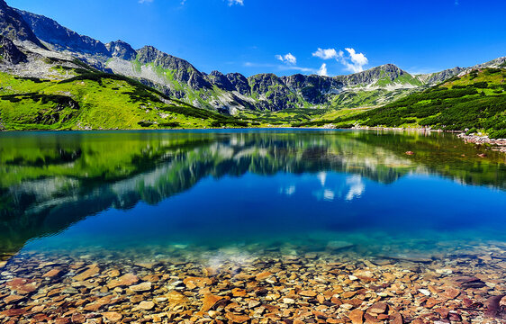
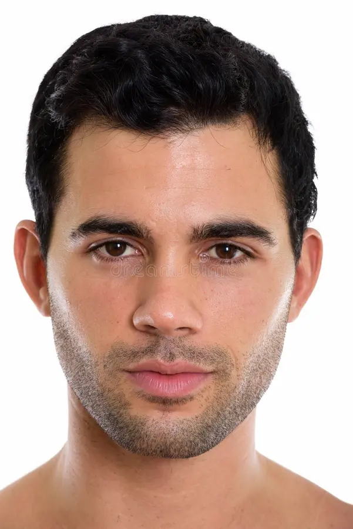

programista i pasjonat gór.


Cześć! Nazywam się Franciszek i jestem pasjonatem technologii oraz przyrody. Na co dzień rozwijam swoje umiejętności w zakresie programowania webowego – HTML, CSS i JavaScript to moje codzienne narzędzia pracy. Wolny czas spędzam aktywnie – na rowerze lub w górach, gdzie najlepiej mi się myśli i gdzie ładuję baterie przed kolejnymi projektami.
Wierzę, że dobry kod i dobry design idą w parze – dlatego staram się łączyć techniczne umiejętności z wyczuciem estetyki. Ten projekt to mój kolejny krok na tej drodze.
HTML5, CSS3, Flexbox, Grid, Bootstrap 5
DOM, zdarzenia, animacje, jQuery
UI/UX, teoria koloru, typografia, responsywność
Rowery górskie to moja pasja od lat. Nic tak nie czyści głowy jak długa trasa przez las.
Tworzę strony internetowe i aplikacje. Każdy projekt to nowa zagadka do rozwiązania.
Tatry, Alpy, Dolomity – każde szczyty mają swój urok. Marzę o zdobyciu Mont Blanc.
Chętnie porozmawiam o współpracy, projektach lub po prostu o górach 🏔️
Napisz do mnie